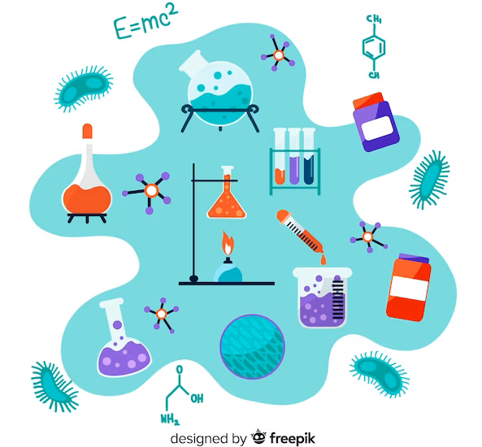

Los sistemas de gestión de calidad ISO-9000 establecen como uno de los principios un enfoque basado en hechos para la toma de decisiones, en particular se basan en el análisis de los datos y de la información.
En esta sesión, revisaremos algunos elementos principales de la estadística descriptiva y cómo se aplica para analizar la calidad y variablidad de un proceso, enfatizando la toma de decisiones con base en datos.
En un proceso, tenemos variables de entrada y de salida:
Entrada - también llamadas variables independientes (las \(X\)), por lo general son variables de control del proceso: temperatura, velocidad, presión, cantidad y/o características de algún insumo o material. Además, son las que influyen en los resultados del proceso como la humedad en el ambiente, la habilidad de un operario, el método de trtabajo, etc.
Salida - también llamadas variables dependientes o de respuesta (las \(Y\)) reflejan los resultados de un proceso
Los valores que toman las variables de salida evalúan el desempeño del proceso. Por lo general, estas tienen especificaciones o límites de tolerancia, porque los valores que deben tener están especificados.
Por ejemplo, un proceso que produce piezas metálicas que se van a ensamblar, las dimensiones de estas deben caer dentro de cierto rango o de lo contrario no se podrán usar. Cuando se cumplen estos requerimientos se dice que el proceso cumple con las especificaciones de calidad.
Existen tres tipos de variables de salida o características de calidad, de acuerdo con el tipo de especificaciones que deben cumplir:
Dado que en el control de calidad, es una tarea primordial es conocer qué tanto los valores de una variable de salida de un proceso son satisfactorios, y saber de esa manera si el proceso es capaz de cumplir con las especificaciones de esa variable es indispensable tomar datos de esa variable y analizarlos adecuadamente.
La frecuencia absoluta de un valor en un conjunto de datos es simplemente el número de veces que ese valor aparece en el conjunto.
Supongamos que tenemos el siguiente conjunto de datos representando las edades de un grupo de personas:
25, 30, 25, 35, 40, 25, 30
La frecuencia absoluta de la edad 25 es 3, ya que aparece tres veces en el conjunto.
La frecuencia relativa de un valor es la proporción o el porcentaje del número de veces que aparece ese valor en relación con el tamaño total del conjunto de datos.
Continuando con el conjunto de datos de edades, la frecuencia relativa de la edad 25 se calcula dividiendo la frecuencia absoluta (3) entre el tamaño total del conjunto (7):
Frecuencia Relativa (25) = 3 / 7 ≈ 0.4286 (redondeado a cuatro decimales)
Esto significa que el 42.86% de las edades en el conjunto son iguales a 25.
La frecuencia acumulada de un valor es la suma de las frecuencias absolutas de todos los valores iguales o menores que ese valor en el conjunto de datos.
Usando el mismo conjunto de datos de edades, si queremos calcular la frecuencia acumulada de 30, sumamos las frecuencias absolutas de 25 (3 veces) y 30 (2 veces):
Frecuencia Acumulada (30) = Frecuencia Absoluta (25) + Frecuencia Absoluta (30) = 3 + 2 = 5
Esto significa que hay un total de 5 personas cuyas edades son iguales o menores a 30 en el conjunto.
La frecuencia relativa acumulada de un valor es la suma de las frecuencias relativas de todos los valores iguales o menores que ese valor en el conjunto de datos.
Siguiendo con el conjunto de datos de edades, si deseamos calcular la frecuencia relativa acumulada de 30, primero calculamos las frecuencias relativas de 25 y 30 como lo hicimos antes:
Frecuencia Relativa (25) = 0.4286, Frecuencia Relativa (30) = 0.2857
Luego, sumamos estas frecuencias relativas:
Frecuencia Relativa Acumulada (30) = Frecuencia Relativa (25) + Frecuencia Relativa (30) = 0.4286 + 0.2857 = 0.7143
Esto significa que el 71.43% de las edades en el conjunto son iguales o menores a 30.
A partir de los anteriores conceptos podemos construir una Tabla de Frecuencias la cual es una herramienta utilizada en estadística descriptiva para resumir y presentar de manera organizada la información sobre la frecuencia de ocurrencia de diferentes valores en un conjunto de datos. Esto junto con lo anterior se puede ilustrar en el software Estadístico R de la siguiente manera.
#El ejercicio realizado previamente puede ilustrarse en R de la siguiente manera:
x<- c(25, 30, 25, 35, 40, 25, 30) #Inicializó un vector con los datos
Tabla<- table(Edad=x); Tabla #Frecuencias AbsolutasEdad
25 30 35 40
3 2 1 1 Tabla_prop<- prop.table(Tabla);Tabla_prop #Frecuencias RelativasEdad
25 30 35 40
0.4285714 0.2857143 0.1428571 0.1428571 Tabla_acumulada<- cumsum(Tabla);Tabla_acumulada #Frecuencias Absolutas acumuladas25 30 35 40
3 5 6 7 Tabla_prop_acum<- cumsum(Tabla_prop);Tabla_prop_acum 25 30 35 40
0.4285714 0.7142857 0.8571429 1.0000000 TablaFrecuencias<- cbind(Tabla,Tabla_prop,Tabla_acumulada,Tabla_prop_acum) #Agrupar las tablas para crear una sola tabla resumen
colnames(TablaFrecuencias)<- c(" Frec.Abs"," Frec.Rel"," Frec.Abs.Acum"," Frec.Rel.Acum") #Cambiar nombre de las columnas
round(TablaFrecuencias,2) #Aproximar a 2 decimales Frec.Abs Frec.Rel Frec.Abs.Acum Frec.Rel.Acum
25 3 0.43 3 0.43
30 2 0.29 5 0.71
35 1 0.14 6 0.86
40 1 0.14 7 1.00Antes de empezar a definir cada concepto pensemos inicialmente en una variable para identificar cada una de ellas.
Supongamos que un laboratorio químico está analizando la concentración de un compuesto en muestras de agua tomadas de diferentes fuentes naturales.
Se han recopilado los siguientes datos de concentraciones (en mg/L) para 15 muestras de agua:
35, 42, 50, 55, 58, 62, 65, 70, 75, 80, 85, 90, 95, 98, 100
#Inializaremos estos datos en R, para trabajar con ellos:
Concentracion<-c(35, 42, 50, 55, 58, 62, 65, 70, 75, 80, 85, 90, 95, 98, 100)#Gráfiquemos un histograma de estos mismos
hist(Concentracion,xlab="Concentracion en Mg/L",ylab="Frecuencia Absoluta",panel.first=grid(),col="white",border="red4",lwd=2,main="")##Medidas de posición
Las medidas de posición hacen enfásis a una estructura de los datos ordenada e identificar cual es el valor que nos describe que hasta ese punto se encuentra el “x”% de valores.
Es decir, hasta una concentración de 50 Mg/L que porcentaje de valores se encuentran ubicados. También se pueden entender como subdivisiones de los datos, esto es cuales son esos valores que me generan una división en 2,4,100 grupos.La mediana es el valor que divide un conjunto de datos en dos partes iguales, de manera que el 50% de los datos están por encima de la mediana y el 50% están por debajo. Para calcularla, primero se ordenan los datos y se encuentra el valor central si el número de datos es impar, o el promedio de los dos valores centrales si el número de datos es par.
Los percentiles dividen un conjunto de datos en cien partes iguales.
El percentil P representa el valor por debajo del cual se encuentra P% de los datos. Por ejemplo, el percentil 25 (P25) es el valor por debajo del cual se encuentra el 25% de los datos.
El rango intercuartil es la diferencia entre el tercer cuartil (Q3) y el primer cuartil (Q1). Es una medida de dispersión que indica cuánto se extienden los valores en el rango central del conjunto de datos.
#Podemos obtener todas estas medidas de una manera sencilla a través de las siguientes funciones
quantile(Concentracion,c(0.10,0.25,0.5,0.75,0.9)) 10% 25% 50% 75% 90%
45.2 56.5 70.0 87.5 96.8 #Debemos reemplazar como argumento inicial nuestro vector con valores, seguido de los percentiles de interés. En este caso obtenemos el percentil 10, o primer decil, primer cuartil, mediana, tercer cuartil y percentil 90% respectivamente.#Gráfiquemoslo en el histograma
hist(Concentracion,xlab="Concentracion en Mg/L",ylab="Frecuencia Absoluta",panel.first=grid(),col="purple4",lwd=2,main="",ylim=c(0,5))
Percentiles<-quantile(Concentracion,c(0.10,0.25,0.5,0.75,0.9))
abline(v=Percentiles,lwd=2,col=c(1,2,3,4,5))
legend("topleft",legend=c("10%","25%","50%","75%","90%"),col=c(1,2,3,4,5),
lwd=2,cex=0.8)Las medidas de tendencia central, también conocidas como medidas de centralización, sirven representar la ubicación central o típica de un conjunto de datos. Estas medidas proporcionan información sobre dónde se agrupan o concentran los valores en un conjunto de datos.
La mediana es el valor que se encuentra en el punto medio de un conjunto de datos cuando los valores están ordenados de menor a mayor (o viceversa). Si hay un número impar de valores, la mediana es el valor central. Si hay un número par de valores, la mediana es el promedio de los dos valores centrales.
La moda es el valor que aparece con mayor frecuencia en un conjunto de datos. Puede tenerse una moda (un valor que se repite con más frecuencia) o múltiples modas si varios valores tienen la misma frecuencia máxima.
#Podemos obtener estos indicadores de la siguiente manera
mode <- function(x) {
return(as.numeric(names(which.max(table(x)))))
} #Creando una función para la moda
cat("Media :", mean(Concentracion), "\n")Media : 70.66667 cat("Mediana :", median(Concentracion), "\n")Mediana : 70 cat("Moda :", mode(Concentracion), "\n")Moda : 35 El rango es la diferencia entre el valor máximo y el valor mínimo en un conjunto de datos. Es la medida de dispersión más simple y fácil de calcular.
La desviación estándar mide la dispersión de los valores con respecto a la media. Una desviación estándar más grande indica una mayor dispersión. Se calcula como la raíz cuadrada de la varianza.
\[\sigma^2=\frac{\sum_{i}^{n}({x_{i}-\bar{x}})}{n},\quad s^2=\frac{\sum_{i}^{n}({x_{i}-\bar{x}})}{n-1}\]
El rango intercuartil es la diferencia entre el tercer cuartil (Q3) y el primer cuartil (Q1). Se utiliza para medir la dispersión en la parte central de un conjunto de datos, ignorando los valores extremos.
El coeficiente de variación es una medida relativa de la dispersión que compara la desviación estándar con la media. Se expresa como un porcentaje y se utiliza para comparar la dispersión en diferentes conjuntos de datos. Su expresión es: \[CV=\frac{SD}{|\bar{x}|}*100\]
cat("Varianza :", var(Concentracion))Varianza : 422.8095cat("Desviación Estandar : ", sd(Concentracion), "\n")Desviación Estandar : 20.56233 cat("Coeficiente de variación : ", sd(Concentracion)/abs(mean(Concentracion)), "\n")Coeficiente de variación : 0.2909764 cat("Rango : ", max(Concentracion)-min(Concentracion), "\n")Rango : 65 Las medidas de forma, a veces llamadas medidas de asimetría y curtosis, proporcionan información adicional sobre la distribución de los datos más allá de las medidas de tendencia central y dispersión. Ayudan a caracterizar la simetría, la concentración y la forma de la distribución.
La asimetría mide la falta de simetría en la distribución de los datos. Indica si los datos están sesgados hacia la izquierda (negativo), hacia la derecha (positivo) o si tienen una distribución simétrica (cero). Un valor de asimetría igual a cero indica simetría perfecta.
##Asimetría positiva (derecha)
La ‘cola’ de la distribución se extiende más hacia la derecha y la mayoría de los datos se concentran en valores más bajos que la media.
##Asimetría negativa (izquierda)
La ‘cola’ de la distribución se extiende más hacia la izquierda y la mayoría de los datos se concentran en valores más altos que la media.##Curtosis (Kurtosis)
La curtosis mide la concentración de los datos alrededor de la media y la forma de las colas de la distribución. Indica si los datos tienen colas pesadas (mayor concentración en los valores extremos) o colas ligeras (menos concentración en los valores extremos).
##Curtosis positiva (leptocúrtica)
Indica una mayor concentración de datos alrededor de la media con colas pesadas. Esto puede indicar una distribución más puntiaguda en el centro.
##Curtosis negativa (platicúrtica)
Indica una menor concentración de datos alrededor de la media con colas ligeras. Esto puede indicar una distribución más aplanada en el centro.
Indica una distribución normal con colas moderadas.
#Medidas de forma en R
library(moments)
cat("Asimetría : ",skewness(Concentracion), "\n")Asimetría : -0.1133882 cat("Curtosis : ",kurtosis(Concentracion)) Curtosis : 1.886922